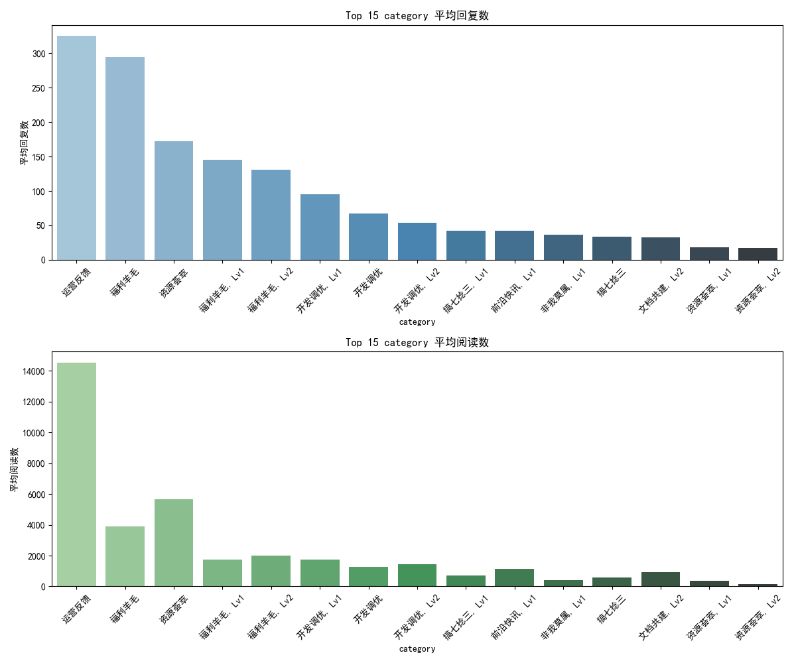
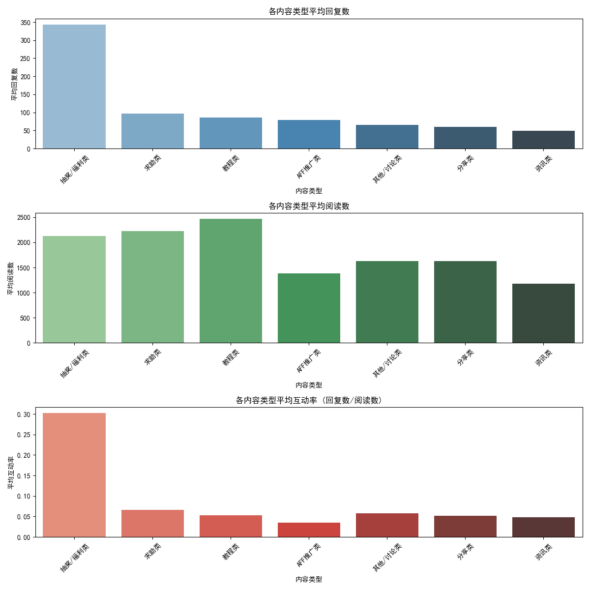

6. 附录：相关图表
各分类平均互动量
各主标签平均互动量
内容类型与互动关系
社区高频词

概览: 本报告基于最终修正的 `article.csv` 数据集，深入分析了影响 LINUX DO 社区帖子热度（阅读量、回复量）的关键因素，探索了社区热门话题，并洞察了用户行为。
总结: 高阅读量和高回复量的帖子在分类和标签上高度一致，核心吸引力在于技术分享和福利活动。
洞察: "运营反馈" 类帖子平均互动量极高。"资源荟萃" 和 "福利羊毛" 系列也表现出色。
洞察: "求资源" 和 "DeepLX" 标签下的帖子具有压倒性的互动量。"抽奖" 标签的平均回复数也很高。
洞察: "抽奖/福利类"内容是激发用户参与（回复）的最有效手段，其互动率远超其他类型。"求助类"内容的互动率也相对较高。
洞察: 社区内最核心的话题依然是"纯水"、"人工智能"、"快问快答"、"软件开发"以及"福利活动"("公益", "AFF", "抽奖")。"网盘"资源分享也是一个重要主题。
总结: 抽奖和福利活动是驱动用户深度参与（回复）的绝对核心动力。内容型帖子能带来流量，但用户参与度相对较低。